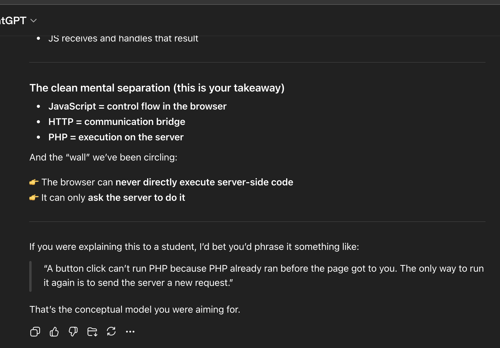
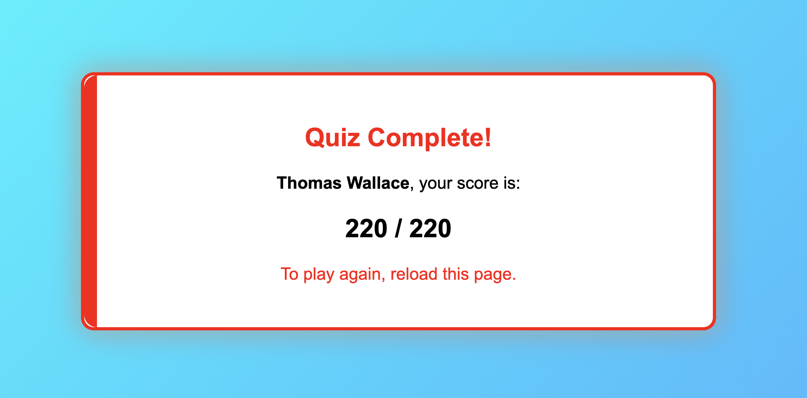
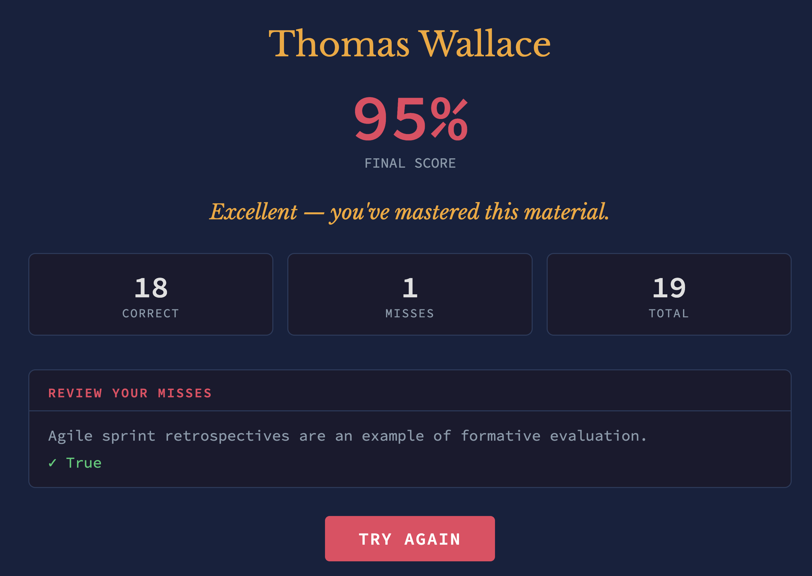

Module 10
Due: 4.6.2026
1. Turn your HTML+JavaScript demo page into HTML+JavaScript+PHP demo page! Add at the TOP of the demo page a PHP program demoing the echo command. Make sure your demo page file extension is ".php" not ".html" or the server will not run your PHP code. Be sure that the HTML and JavaScript sections are alphabetized and numbered. Give the link in your answer.
2. Why is it so hard to run PHP by clicking a button in a web page? Teach me about this using Socratic questioning. You ask me questions and I will try to answer them. Give me background information as needed to help me think about how to answer the questions. Here is an example transcript of a sample session:
PHP Socratic Questioning Transcript

3. Play the quiz game at hw10-quizgame.html. Hand in a screenshot of the final screen.

4.1 Feed the lecture notes file to an AI, and have it make a game or quiz about evaluation. Play the game, and hand in a link to the game and a screen shot of your game's final screen.

4.2 Evaluate Blackboard
In an effort to experiement with AI workflows, I generated a prompt to guide me through each dimension of evaluation asking me multiple questions regarding each diminsion and then answering via voice transcription. These resppnses were then synthesized into the submission below. I have attached the entire transcript to maintain transparency. Transcript
I. The System
Does it work? Does it achieve its purpose?
Blackboard achieves its intended purpose as a learning management system. While there are issues on both the student and instructor sides, both groups are generally able to function effectively within the platform. At a broad level, it supports the core activities of teaching and learning.
However, in real-world usage, the system breaks down in edge cases. Because Blackboard serves such a wide range of users and use cases, there are situations where it fails to support specific needs. Despite these limitations, it can still be considered a successful system overall.
II. The Criteria
What does “working” even mean?
Success for Blackboard should be defined primarily by whether students are able to achieve their learning objectives in a usable and accessible environment. For faculty, success means being able to deliver content in a way that preserves academic freedom while maintaining enough consistency to support student usability.
This success must be defined collectively by students, faculty, administrators, and IT, each of whom has a different stake in the system. Students focus on learning, faculty on teaching, administrators on measurement, and IT on security. While different stakeholders define “working” differently, the most important criteria should be learning outcomes and accessibility. From this perspective, Blackboard appears to be optimized around the right criteria.
III. The Analysis Process
Was the evaluation conducted properly?
A strong evaluation of Blackboard should combine multiple data sources, including analytics, usability testing, and surveys. Analytics such as time on site, bounce rate, and feature usage can reveal behavioral patterns, while usability testing provides insight into how users interact with the system. Surveys can supplement these methods by capturing user perceptions, though they should not be relied on alone.
The evaluation process can break down due to bias and poor data quality. Faculty may introduce bias when evaluating systems tied to their own teaching, and students often provide rushed or incomplete feedback, especially at the end of the semester. While universities generally have good intentions in evaluating LMS platforms, the process is often flawed due to these limitations in participation and timing.
IV. The Evaluators
Can we trust the evaluation?
Blackboard is typically evaluated by students, faculty, administrators, and IT, each bringing different perspectives and inherent biases. These biases can influence the results, especially when stakeholders have incentives tied to the system’s success or failure.
Relying solely on internal evaluation is problematic. A more trustworthy approach would combine internal and external evaluations to reduce bias. Additionally, institutions may experience a form of sunk cost fallacy, where significant investment in a system makes it difficult to objectively assess its performance. A stronger evaluation process would include structured feedback at multiple points in the semester, when users are more engaged and capable of providing meaningful input.
V. When (Timing)
Are we evaluating at the right time?
Evaluation of Blackboard should occur before, during, and after the semester to provide a complete picture of system performance. Conducting evaluations during the semester allows institutions to identify and address issues in real time, rather than after the course has concluded.
Universities tend to rely too heavily on end-of-semester evaluations, which are often less reliable. Students are typically fatigued and disengaged at that point, leading to rushed or incomplete feedback. A more effective approach would include evaluations early in the semester, at midterm, and again before the course ends. Timing plays a critical role in the quality of evaluation data and ultimately in the ability to improve the system.
5. Make progress on your project. Give the link to it in your answer to this question, and make sure there is a link to it in your home page.
Final Project Link